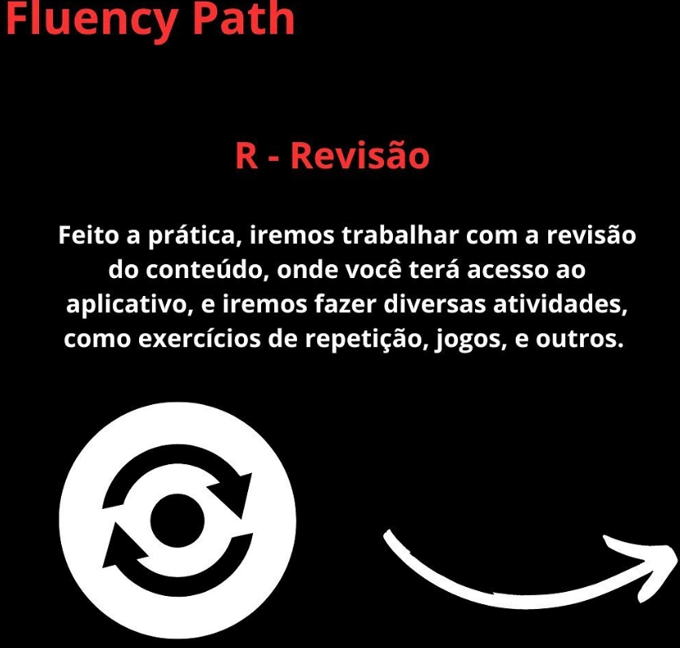
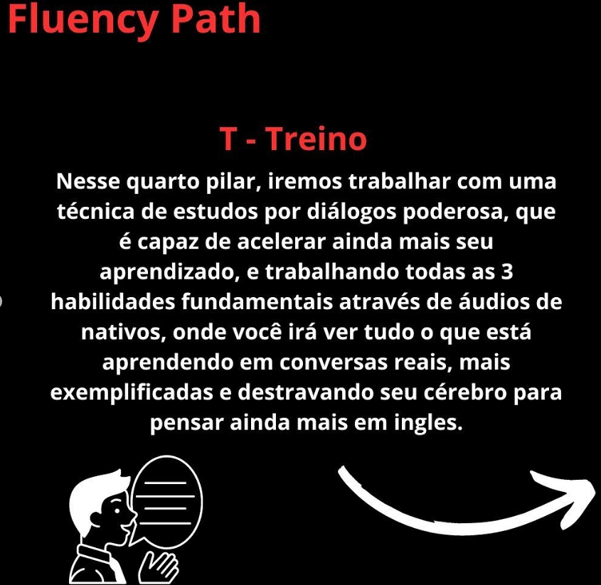
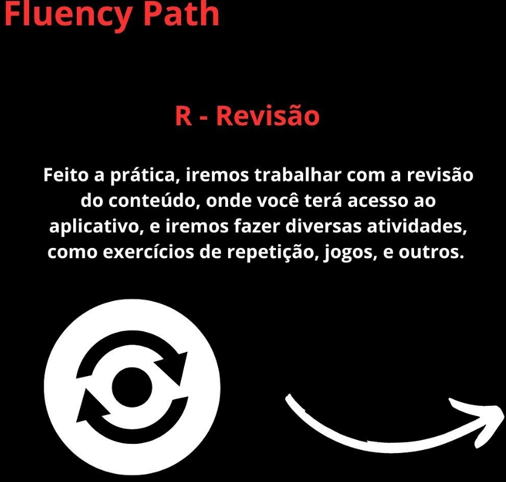
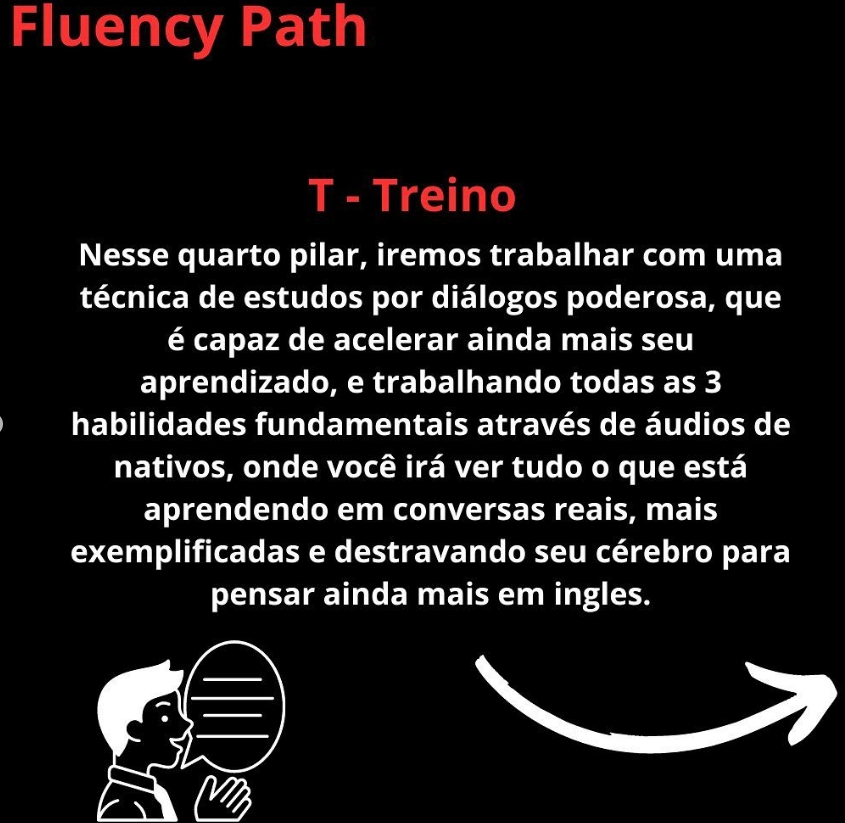

O que é o Fluency Path
O Fluency Path nada mais é que o nome dado aos 4 Pilares (TPRT) que criei para aprender inglês da forma mais correta e fluente póssivel. Sem falsas promessas e truques mágicos, pois o único capaz de obter a fluência é você mesmo com sua determinação e o meu método!

O Que são os 4 Pilares
São nada mais que os 4 principios para ser fluente no inglês: T- Téorico , P- Prática , R- Revisão , T- Treino.

 



Por quê fazer parte do Fluency Path?
Diferente de muitos outros cursos Eu não faço falsas promessas que não serão cumpridas, meu metodo faz com que a sua fluência seja alcançada de maneira correta e garantida, porém como diz nos meus 4 Pilares nada pode ser alcançada se não houver esforço e determianção, não adianta de nada você ter o melhor conteúdo se você não está determinado a entende-lo e pratica-lo!
Siga o fluxo Fluency Path
- Inscreva-se no Fluency Path Path.
- Realize as aulas.
- Pratique os exercícios das aulas.
- Revise e tire duvidas.
- Treine.
- Alcance a fluência!